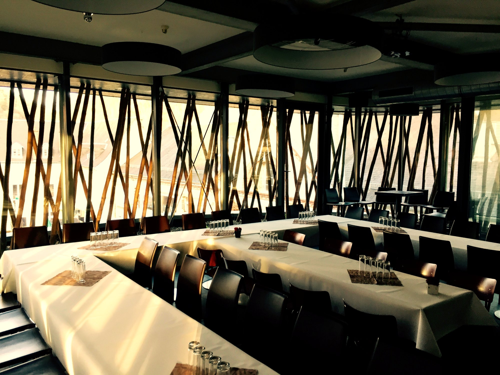
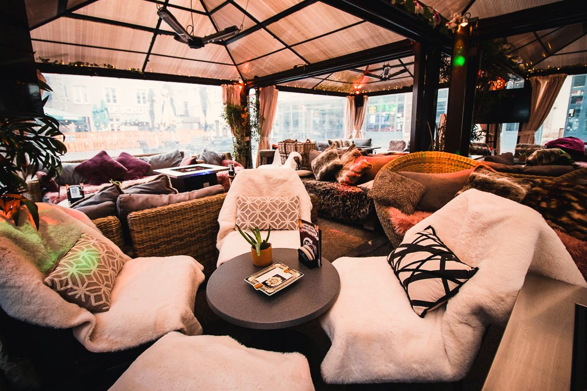
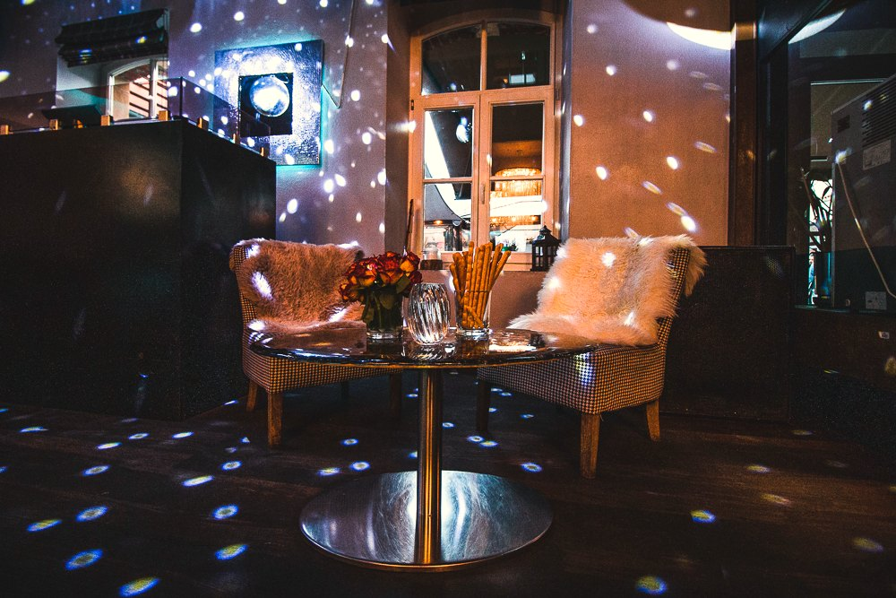
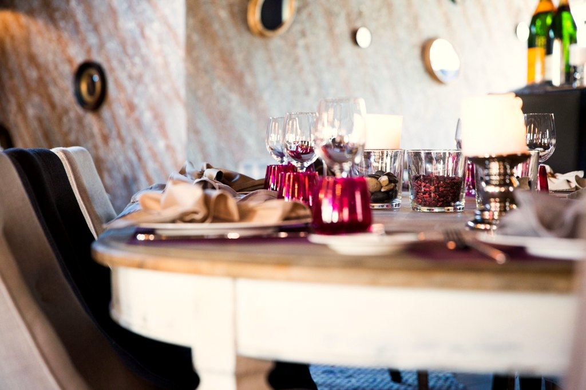
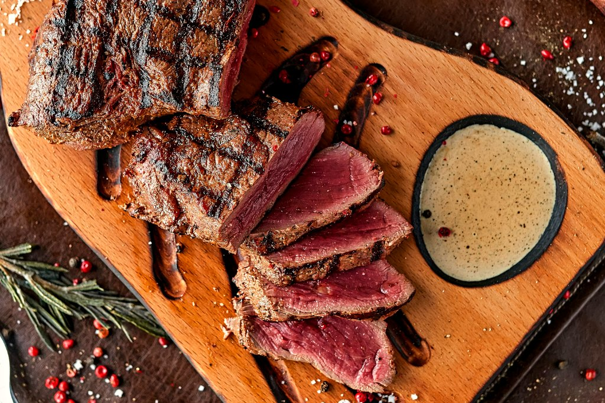
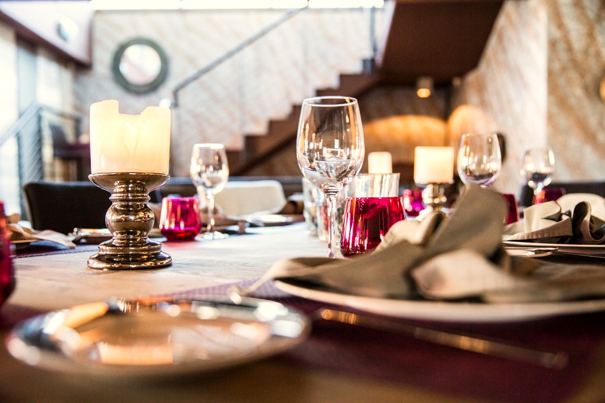

Jakob's House
Where Dinner Meets Party
Bar, terrasse et salle dans l'ancienne brasserie Mousel, aux Rives de Clausen — une seule maison.
Le bar, la salle & la fête — une seule maison.
Jakob's House occupe un bâtiment des Rives de Clausen, l'ancien site de la brasserie Mousel — le vieux quartier brassicole du Grund, reconverti en un ensemble de bars et restaurants au bord de l'Alzette.
Au rez, le bar et la terrasse. À l'étage, la salle et sa façade en lattis de bois. Et, quand la maison se prête aux fêtes, une grande salle privée. Trois ambiances, un seul nom : eat, meet & dance.
Le bar & la terrasse.
Un bar habillé de bois sombre et de miroir, et une terrasse aménagée pour prendre un verre entre amis — coussins, plaids, chauffages d'extérieur, à l'ombre des Rives de Clausen.


La salle, derrière le lattis.
En cuisine, on prépare des plats soignés à partir de bons produits — la salle donne sur les toits du Grund à travers une façade de bois en lattis, un des traits les plus marquants de la maison.

Burgers et fondue figurent parmi les habitués de la carte, aux côtés d'une cuisine plus large — sans prétention, pensée pour la table comme pour l'entre-deux d'une soirée.

Burgers, fondue & cuisine du monde.
Voici les grandes lignes de la carte — la sélection complète, avec les prix, est servie en salle.
Burgers
Un des habitués de la maison, servi au bar comme en salle.
Fondue
L'autre signature — à partager, pour une soirée qui s'installe.
Cuisine du monde — le reste de la carte, plus large, sans un seul registre de cuisine.
Catégories indicatives ; carte détaillée, plats et prix à confirmer en salle.
Mariages, anniversaires, événements.
La grande salle de l'étage s'arrange selon vos besoins — pour un mariage, un anniversaire, ou une réunion professionnelle. Capacité et devis à confirmer directement avec la maison.

9 Rives de Clausen, Grund.
jakobs.lu ne répond plus — ceci est une proposition de nouveau site, à partir de vos photos et de votre carte.